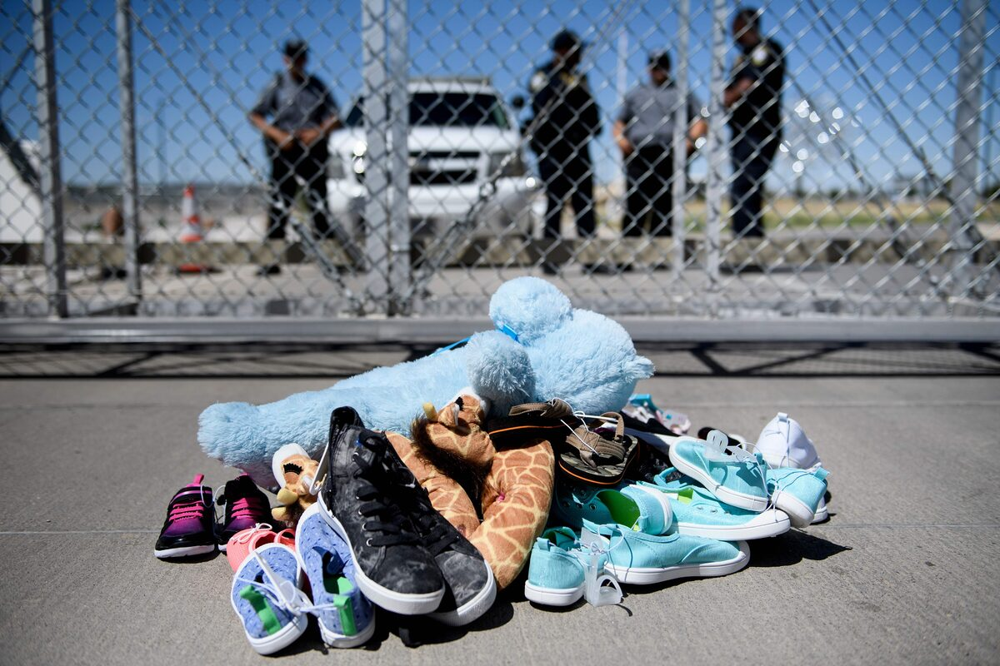
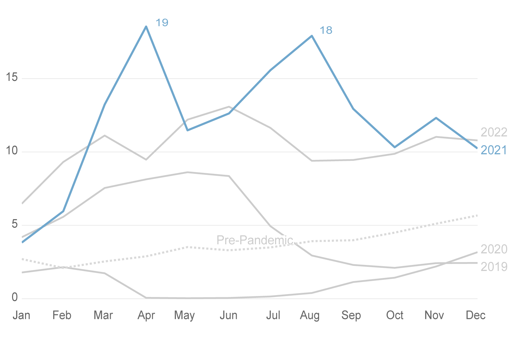
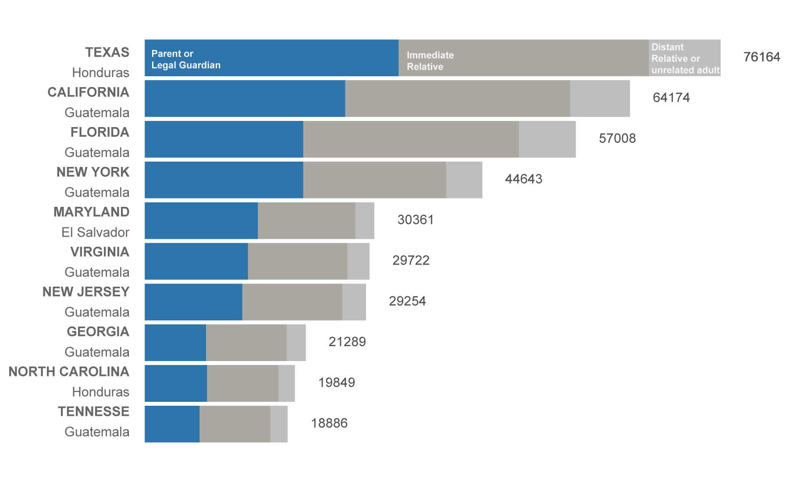
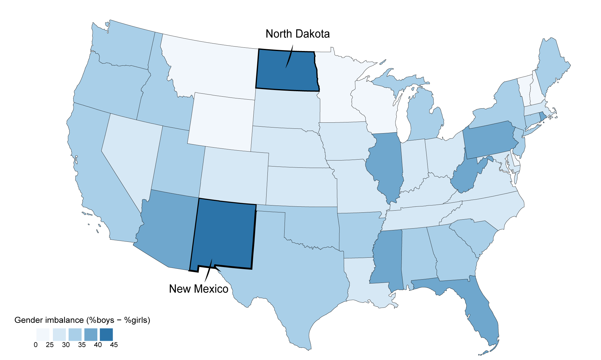
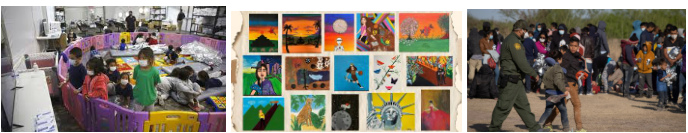

Emily Figueroa
A picture of US migration from its most vulnerable population: Unaccompanied Migrant Children.

As a subpopulation of the immigration landscape, unaccompanied migrant children navigate different federal legal systems, protections, and processing pathways. Unaccompanied migrant children are defined as minors who arrive at US borders without a legal guardian.
As a vulnerable population, these children are protected by law under the Homeland Security Act of 2002 and the 2008 William Wilberforce Trafficking Victims Protection Reauthorization Act (TVPRA) which legally binds the U.S. Department of Health and Human Services to care for these children. Once arrived at the border, they are placed under the custody and care of the Office of Refugee Resettlement (ORR) and held in centers until sponsors are found.
Over the past decade, the number of children arriving in the United States without a legal guardian has continued to grow significantly. With instability found in their home countries, these children are migrating to the United States in search of safety and opportunity. The migration of these children is not defined by a single pattern: it varies across time, geography, and demographics. I wish to understand the demographic differences and experiences of this vulnerable population navigating the complicated, unjust US immigration system.

Source: The New York Times. Data gathered by the U.S. Department of Health and Human Services.
Note: 2023 omitted due to significant missing data. Pre-Pandemic line is the average monthly arrivals across 2013–2018.
Before the disruption of the pandemic, unaccompanied child migration followed similar monthly patterns with monthly arrival rates staying relatively consistent. From January to August, approximately 5,000 unaccompanied children would arrive in the United States each month, with a steady increase as the year progressed.
This pattern was disrupted with border restrictions in 2019–2020 because of the global pandemic. Migration dropped significantly from over 5,000 children arriving per month to the lowest arrival of 32 children in May 2020. With the pandemic further weakening countries, the US experienced record-breaking monthly arrival rates in 2021 and 2022 after restrictions were lifted.

Source: The New York Times. Data gathered by the U.S. Department of Health and Services on children who have migrated to the U.S. without an adult. Note: Destination state was found from the sponsor's ZIP code.
Even with monthly and yearly changes in arrival rates, what remains unchanged is where the majority of these children are relocated. The states that intake the most children (where most sponsors are located) are Texas, California, and Florida. Although arriving at the border alone, they are often released to a parent or an immediate family member.
These children are leaving from Central American countries (Honduras, Guatemala, and El Salvador) which have long, complex histories of poverty, economic instability, violence, and food insecurity. These hardships were further aggravated by the COVID-19 pandemic, in which the US saw the highest rates of migration from this vulnerable population.
In the United States, they hope to find jobs, opportunity, and financial and social stability but what they find is often exploitation.
"Carolina came on her own from Guatemala last year when she was 14. Like a lot of the kids I talked to, she told me that after the pandemic, food was scarce in her village. Even drinking water was scarce. There weren't any jobs. And so she decided to leave and come to this country where she thought life might be easier." - NPR

Note: Destination state found from sponsor's ZIP code. Gender difference calculated as (% of male migrants − % of female migrants).
Every state receives more boys than girls among unaccompanied migrant children, though the gendered difference varies across the country. In states such as New Mexico and North Dakota, boys outnumber girls by as much as 40–45%, while other states show smaller, though still consistent, gaps.
This pattern suggests that migration is not only shaped by geography, but also by gendered experiences. Carolina, like many other children, left her home country in search of greater opportunity. Yet, she is the minority. Girls make up a much smaller share of unaccompanied migrants who seek sponsorship in the United States.
One explanation for this imbalance lies in how boys and girls are positioned differently within migration systems. A New York Times investigation found that many unaccompanied childrend up working in some of the most brutal jobs across the United States, often in industries that rely on physically demanding labor. Boys may be more likely to undertake the journey alone because they are both expected and more readily taken in by sponsors into these dangerous labor markets, where exploitation is high.
The gender imbalance in unaccompanied migration therefore reflects more than just who is moving...it reveals how economic demand, social expectations, and vulnerability intersect.

Unaccompanied child migration cannot be understood through a single lens. It is shaped by sudden changes in arrival patterns, concentrated placement within a small number of states, and uneven demographic experiences across the country.
Together, these patterns reveal a system that is both structured and unpredictable. A system that responds to global instability while relying on localized networks of care. Understanding these dynamics is essential to recognizing the lived experiences of unaccompanied children, who remain one of the most overlooked, vulnerable, and exploited populations in the broader immigration landscape.
This analysis uses a New York Times dataset on child migration patterns acquired through a subpoena of the U.S. Department of Health and Human Services. It contains anonymized information on more than 550,000 child migrants from January 2015 to May 2023, including details on gender, country of origin, destination ZIP code, and sponsor relationship.